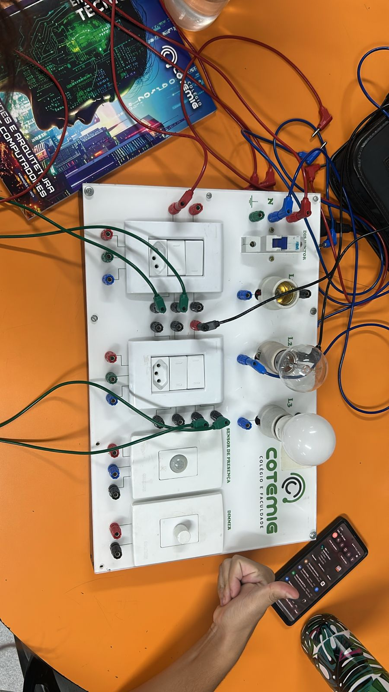
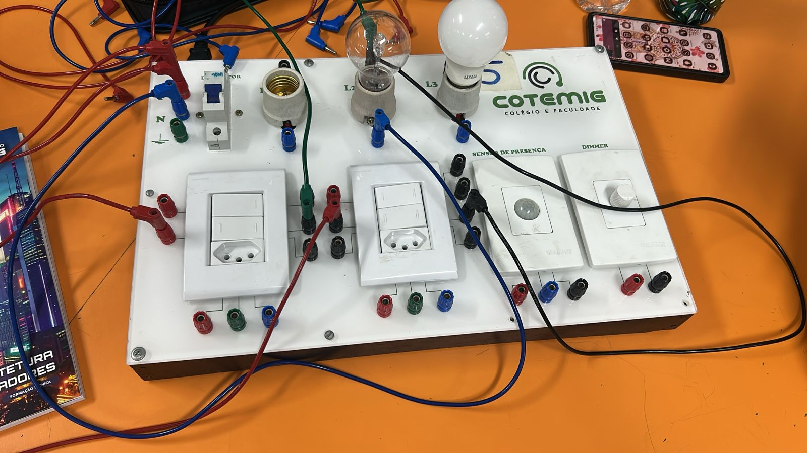
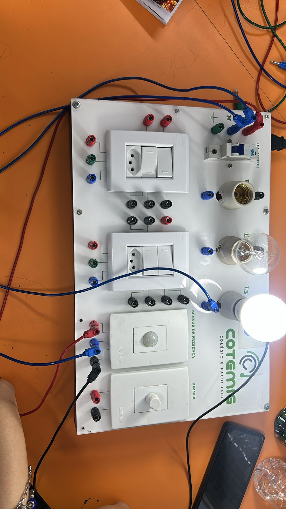
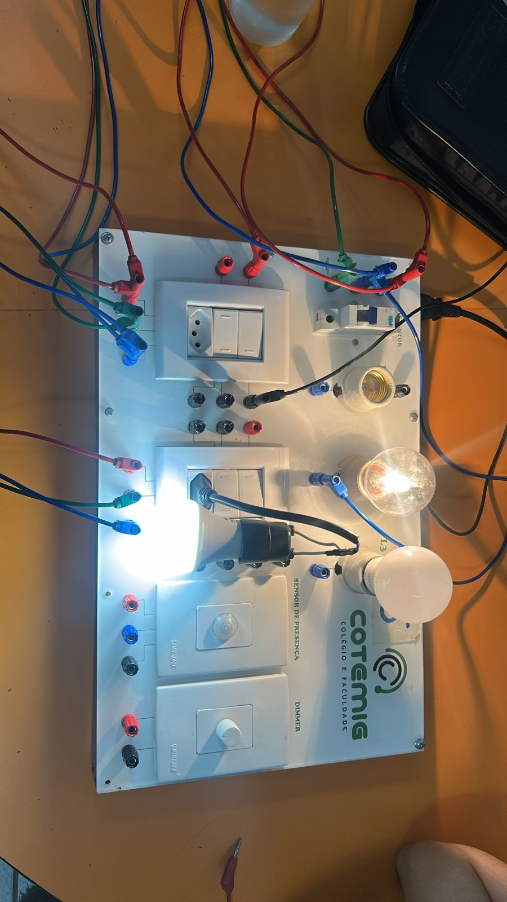
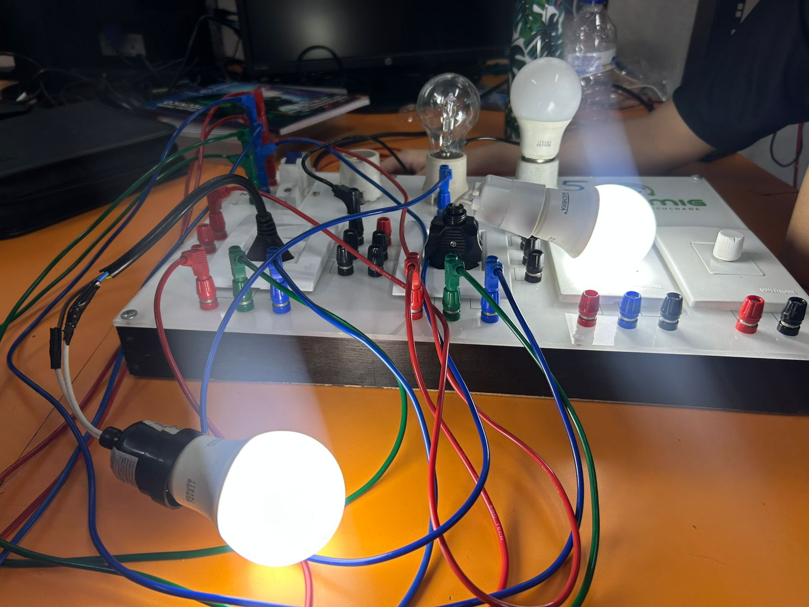
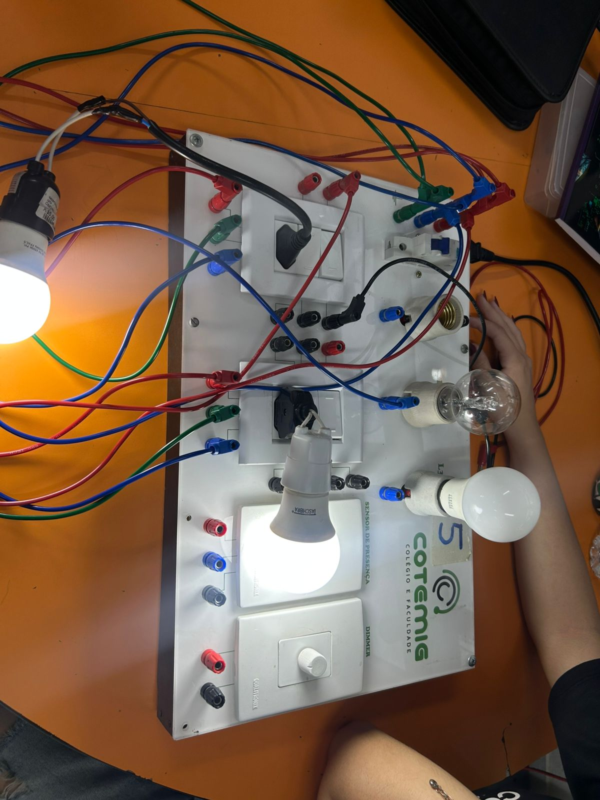
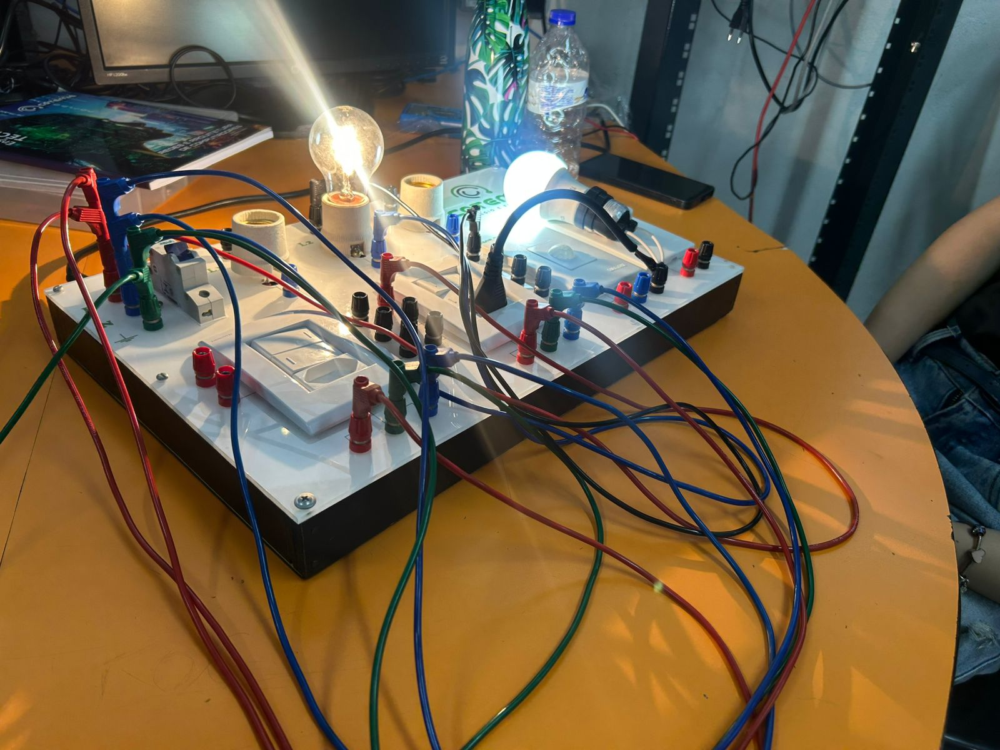
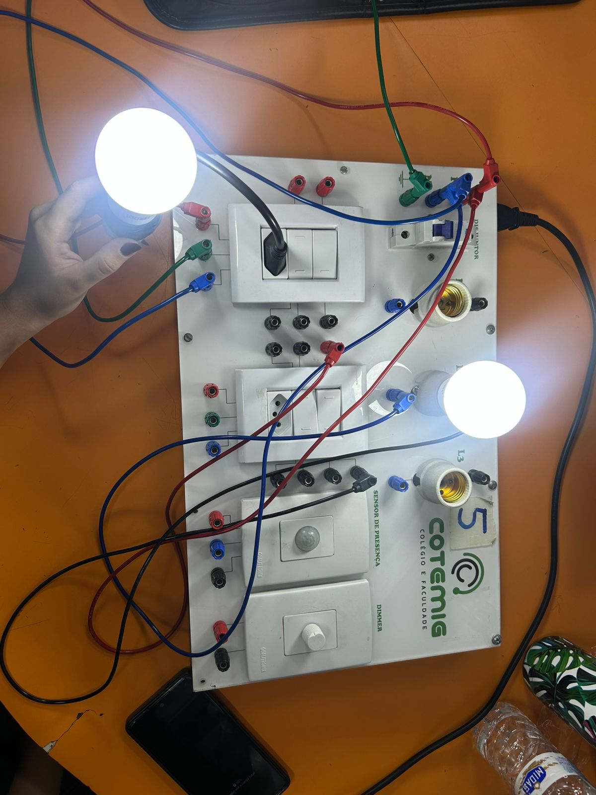
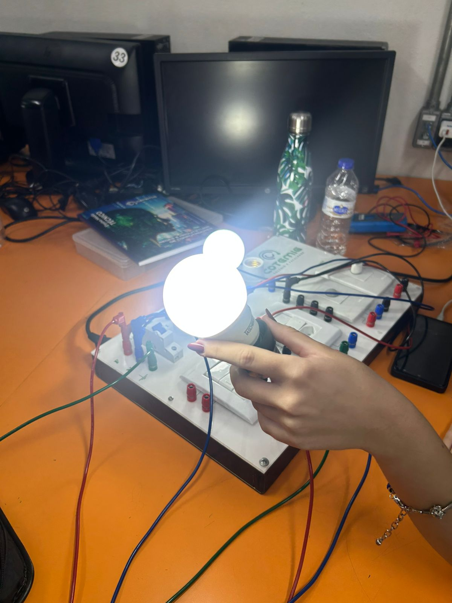

Este documento apresenta o registo visual e técnico da montagem de circuitos elétricos em bancada. O projeto focou na aplicação da NBR-5410 para garantir a segurança dos utilizadores e a integridade dos componentes através da correta identificação e proteção.
Abaixo seguem os registos fotográficos detalhados da execução prática, desde a organização dos condutores até ao teste final de carga.









A utilização de 220V permite fios de menor secção para a mesma potência, reduzindo o aquecimento da fiação e o desperdício de energia por calor.